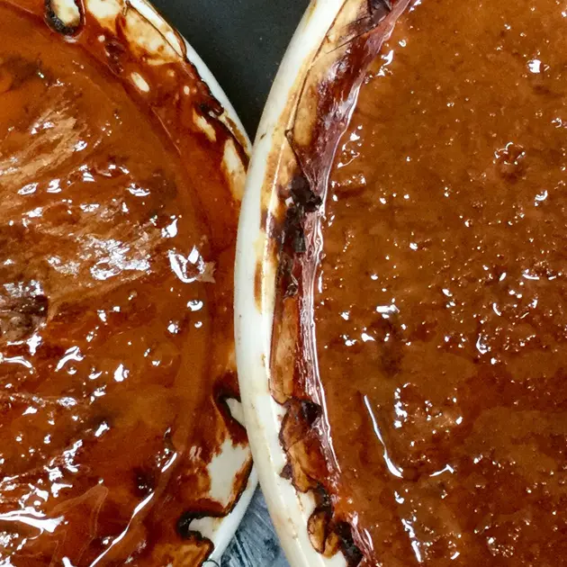
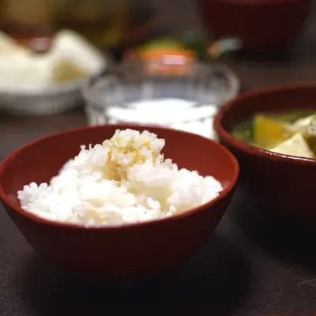
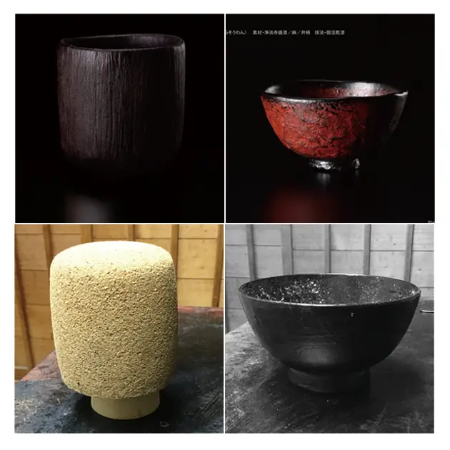
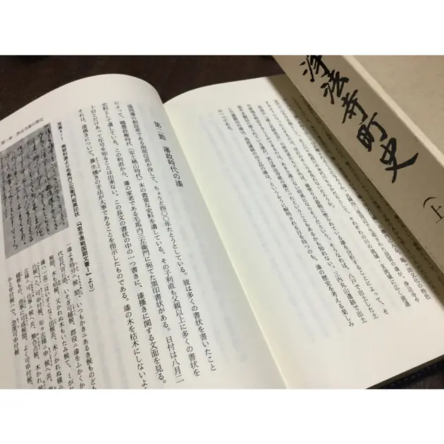
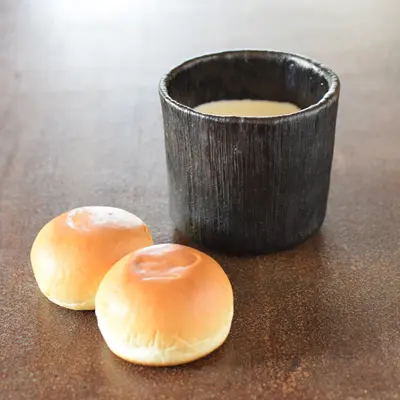

This year marks the 500th anniversary of the death of Leonardo da Vinci.
This drawing of the human body, from the collection of the Accademia Gallery in Venice, is a representation of the ideal body scale of ancient Rome.
The word "尺" and "尺骨" are derived from the Chinese Koukotsu script "尸" (shikabane).
Even today, the body is the standard for measurement, whether in the East or the West.
As Rikyu taught us, "Shuhari".
It is very important to know how to determine the dimensions of my bowl.
Comparison
2019-10-03T22:00+09:00

Glue lacquer made from Chinese and Japanese lacquer.
For several years now, the quality of Chinese products has been very badly mentioned in the media.
I made a dry lacquer bowl with both saps.All other aspects of the production conditions are the same.
Please come and see it at the exhibition. We are looking forward to seeing you at the exhibition.
Both Chinese and Japanese lacquer have their own characteristics.
In this exhibition, I would like to talk about the differences between the different species of plants and the scraping techniques that suit the trees. It is important to make use of the characteristics of both.
Consumption tax
2019-09-04T13:00+09:00

The consumption tax is going up in October. The price of domestic lacquer is going up.
I have been selling these bowls since 1995 at a reasonable price. I have tried to keep them.
The price of the bowls will remain the same as before.
The new project of dry lacquer bowls.
I have also devised a new display of Chinese and Japanese lacquer.
I look forward to seeing you at the exhibition.
Rice with grated radish for summer fatigue. It's pretty good.
Dry lacquer works and wood molds
2019-06-25T19:00+09:00

You use the inside of a cork or bowl as a prototype and try to minimize the amount of waste.
The following is a brief description of the process.
In order to know the material of rough hemp bark, I tailored it without using machines or chemicals.
I also tried to find a good match with raw lacquer.
I am very interested in making use of the characteristics of each material to find a good match with raw lacquer.
We will continue to offer affordable bowls.
We are now struggling to keep the price of the bowls affordable and to avoid raising the price.
Documents
2019-06-15T12:00+09:00

Records preserved in the history of Joboji-cho
Letter on the management of lacquer trees (c. 1596-1623)
Moumauchi (former territory of the Nanbu domain) is part of present-day Kakaku City, Akita Prefecture.
Nanbu clan "Zosho" (1652, 3rd year) lacquer tax report clearly retains the place names of Shikaku, Ninohe-gun and Joboji.
This is a lacquer tree that uses a tool called a barking sickle that has survived from the feudal era. There are fewer of them now.
Authenticity : Authenticity is an important concept in World Heritage.
Arashowan
2019-01-16T20:00+09:00

A work created for last year's exhibition at Tokiwa in Oita .
my motivation for using such particular materials was that I wanted to use them myself.
I use them more than soup bowl.
I want to use Takashimaya's and Kawatoku's bowls, but my wife's fearful gaze
The image of Japanese lacquer bowls as smelly and fragile has spread to other countries.
It is really different from the bowls I made.
I'm in trouble.